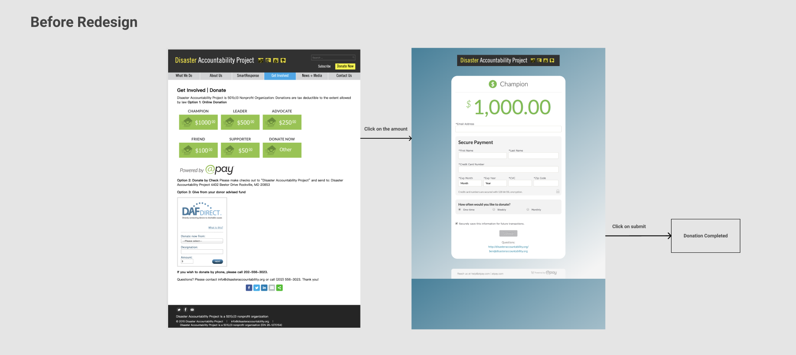

Why to Redesign
The organization wanted to increase donation by redesigning the donation page, since the originial one is not well-designed. We cans see obviously that the information on this page is not well-structured. Our goal is to make clear information structure on this page and encourage users to donate. Before doing design, we check out some good donnation pages from other organizations to learn from them.
Learn from the Bests
After comparing the good donation page designs, the redesign should base on the rules below:
(1) Include a Brief but Compelling “Why”
Most donation page has a brief introduction about how the donation will help.
(2) Keep It to One Page
One-page donation forms have a much higher success rate than those with multiple pages. Make our design into a single page instead of having more than one page as the current page.
(3) Make the Donation Page Secure
Add a certificated mark provided by the service, as most donation pages do.Donors will be more likely to give to your organization if they know that your nonprofit has put every security precaution in place.
(4) Use Suggested Donation Amounts
Around half of these orgs highlighted a default suggested value (usually the 2nd or 3rd option). We can highlight the most popular option too.
(5) Encourage Recurring Donations
Copy what good donation pages do: ask user if they would like their donation to go further. Lead them to choose to do a recurring donation.
(6) Don't Lead the Donors Away
No distracting elements on the page, removing links and navigation. Open the donation page as another new page, take off the navigation bar. Let user focus on the purpose of this page
UI/UX Design